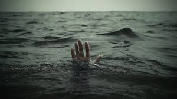

La isla de la luna quedaba un poco mas lejos que la isla del sol, llegas a la isla de la luna y te empeñas en conocer el lugar mas rapido porque pronto se hara de noche, el dueño del barco les dice que ya es hora de irse, de pronto se hace de noche, no se puede ver nada al rededor, el dueño del barco va a una gran velocidad que cuando saltan por una el barco se vuelca, las frias aguas de lago no te dejan mover el cuerpo para que te mantengas a flote y se te congela el cuerpo, despues de un tiempo dejas de respirar y te ahogas. Al dia siguiente encuentran los cuerpos flotando de todas las personas que ivan en el barco congelados y sin vida.